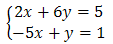

W poniższym filmie podaję podstawowe informacje na
temat macierzy. Pierwszych 20 minut filmu dotyczy w całości tematu macierzy.
Pojęcie macierzy wprowadzono, aby uprościć rozwiązywanie układów równań
liniowych.
W szkole średniej zajmowaliśmy się rozwiązywaniem układów dwóch równań z dwiema
niewiadomymi, np.:  Czasami
pojawiały się układy trzech równań z trzema niewiadomymi, np.: Rozwiązanie takich układów
równań wiązało się z wykonywaniem wielu żmudnych działań, co groziło łatwą pomyłką. Sytuacja byłaby
jeszcze gorsza, gdybyśmy musieli rozwiązywać układy 4 równań z 4 niewiadomymi, lub jeszcze większe.
Do rozwiązywania tego typu problemów przydają się właśnie macierze.
Rozmiar układu nie ma większego znaczenia, gdy rozwiązujemy go za pomocą macierzy.
Można w pewnym uproszczeniu powiedzieć, że macierz - to zwykła
tabela liczb.
Oto przykładowe macierze:
Środkowa z powyższych macierzy opisuje wypisany wcześniej układ 3 równań z 3 niewiadomymi. W macierzy
wypisujemy kolejno wszystkie współczynniki liczbowe: Pionowa kreska, w powyższej macierzy, oddziela
współczynniki wolne, stojące po prawej stronie znaków równości. Nie ma konieczności pisania tej kreski.
Stosuje się ją tylko w celu uzyskania lepszej przejrzystości.
W każdej macierzy możemy wyróżnić kolumny oraz wiersze.
Jeżeli macierz ma tyle samo wierszy co kolumn, to mówimy że jest
macierzą kwadratową.
Na macierzach można wykonywać różne działania. Zazwyczaj
wykonuje się je w celu doprowadzenia macierzy do postaci schodkowej uporządkowanej, z której można
odczytać rozwiązania układu równań.
Wszystkie działania zostaną dokładnie omówione w następnych
rozdziałach.